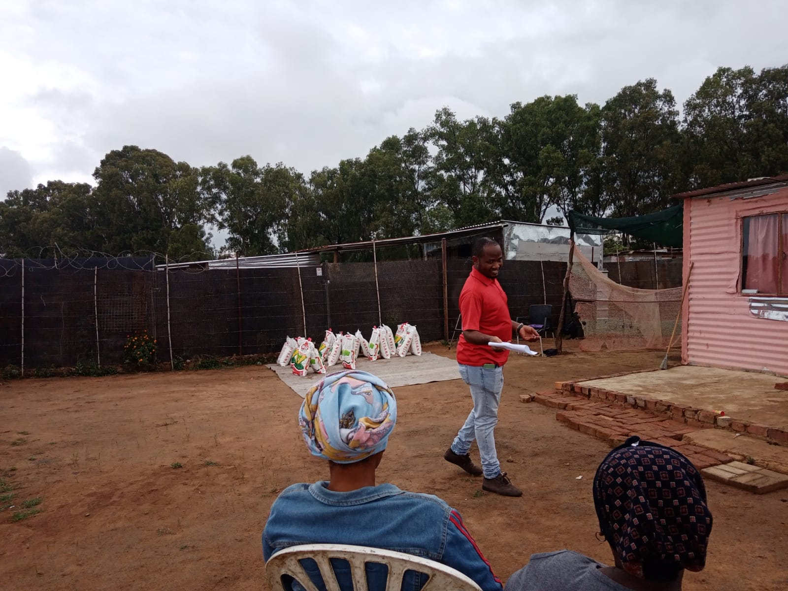
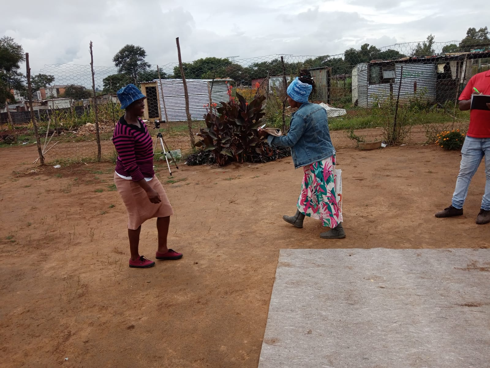

Welcome Home
A place where faith grows, lives are transformed, and communities are strengthened through Jesus Christ.


More Than a Church —
A Family in Faith
Founded in 2021, Apostolic Revival Mission — was born of God by the Spirit of God. After many years of serving God through other ministries, God called the man of God out for a special assignment: to lead God's people back to Him through the teaching of Jesus Christ.
Holiness is Our Focus
Without holiness no one will see God. We are called to restore the fear of God into the hearts of His people (Hebrews 12:14).
ARM OF GOD TV
Our messages are broadcast on YouTube and Facebook, reaching millions across Pretoria and around the world.
Love & Be Love Outreach (LBOI)
Our charity arm actively serves communities in Pretoria's inner city and beyond, bringing hope to the less privileged.
Our Core Values
Six foundational pillars that shape everything we do — from Sunday worship to weekday outreach.
Scripture First
The Bible is our ultimate authority. Every decision, teaching, and action is rooted in the living Word of God.
Passionate Worship
We pursue the presence of God with wholehearted worship in spirit and in truth, every single day.
Authentic Community
We believe in life lived together. Real relationships, real growth, and real accountability in Christ.
Sacrificial Service
Following Jesus means serving others. We pour ourselves out for our city, our neighbors, and the world.
Global Mission
The Great Commission sends us beyond our walls. We are committed to making disciples of all nations.
Lifelong Growth
We are all on a journey. We create spaces for spiritual growth through discipleship, teaching, and mentorship.

Our Outreach &
Community Impact
Faith without works is dead. We actively serve our community through multiple outreach programs, bringing hope to the most vulnerable.
Food Assistance
Food distributions serving families in our local community.
Youth Development
Mentorship, sports, arts, and life skills programs transforming young lives.
Mission Projects
Supporting missionaries and communities across Africa.
Moments of Community & Worship
A glimpse into the vibrant life of our church — worship services, community events, and outreach in action.



For I know the plans I have for you, declares the Lord — plans to prosper you and not to harm you, plans to give you hope and a future.